MERFISH Mouse Hypothalamic Preoptic Region
Source:vignettes/merfish_mouse_hypothalamic.Rmd
merfish_mouse_hypothalamic.Rmd1 Dataset Explanation
Moffitt et al. created a 3D spatial expression dataset consisting of 155 genes from ~1 million single cells acquired from mouse hypothalamic preoptic regions. Please ensure that wget is installed locally to streamline the download.
Clustering, 3D visualization, and cell type identification of clusters using marker genes will be explored in this tutorial.
2 Start Giotto
# Ensure Giotto Suite is installed.
if(!"Giotto" %in% installed.packages()) {
pak::pkg_install("giotto-suite/Giotto")
}
# Ensure GiottoData, a small, helper module for tutorials, is installed.
if(!"GiottoData" %in% installed.packages()) {
pak::pkg_install("giotto-suite/GiottoData")
}
# Ensure the Python environment for Giotto has been installed.
genv_exists <- Giotto::checkGiottoEnvironment()
if(!genv_exists){
# The following command need only be run once to install the Giotto environment.
Giotto::installGiottoEnvironment()
}3 Download Dataset
library(Giotto)
# Specify path from which data may be retrieved/stored
data_path <- "/path/to/data/"
# Specify path to which results may be saved
results_folder <- "/path/to/results/"
# Optional: Specify a path to a Python executable within a conda or miniconda
# environment. If set to NULL (default), the Python executable within the previously
# installed Giotto environment will be used.
python_path <- NULL # alternatively, "/local/python/path/python" if desired.
# In the event of authentication issues with wget,
# add ", extra = "--no-check-certificate" " after the method argument.
# Get the dataset:
GiottoData::getSpatialDataset(dataset = "merfish_preoptic",
directory = data_path,
method = "wget")4 Create Giotto Instructions & Prepare Data
# Optional, but encouraged: Set Giotto instructions
instructions <- createGiottoInstructions(save_plot = TRUE,
show_plot = FALSE,
return_plot = FALSE,
save_dir = results_folder,
python_path = python_path)
# Create file paths to feed data into Giotto Object
expr_path <- file.path(data_path, "merFISH_3D_data_expression.txt.gz")
loc_path <- file.path(data_path, "merFISH_3D_data_cell_locations.txt")
meta_path <- file.path(data_path, "merFISH_3D_metadata.txt")
# Create Giotto object
g <- createGiottoObject(expression = expr_path,
spatial_locs = loc_path,
instructions = instructions)
# Add additional metadata
metadata <- data.table::fread(meta_path)
g <- addCellMetadata(g,
new_metadata = metadata[,c("layer_ID", "orig_cell_types")])First pre-test filter parameters for both features and cells.
filterDistributions(g,
detection = "feats")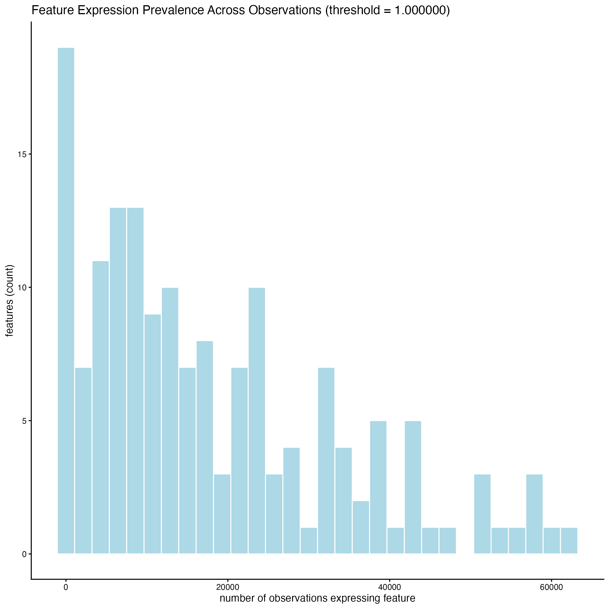
filterDistributions(g,
detection = "cells")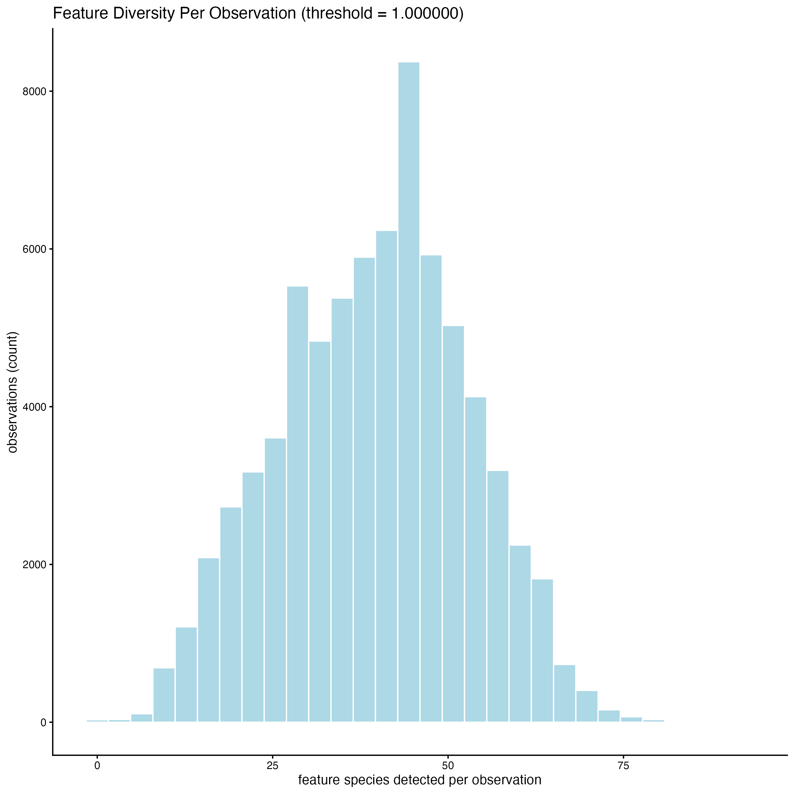
filterCombinations(g,
expression_thresholds = c(0,1e-6,1e-5),
feat_det_in_min_cells = c(500, 1000, 1500),
min_det_feats_per_cell = c(1, 5, 10))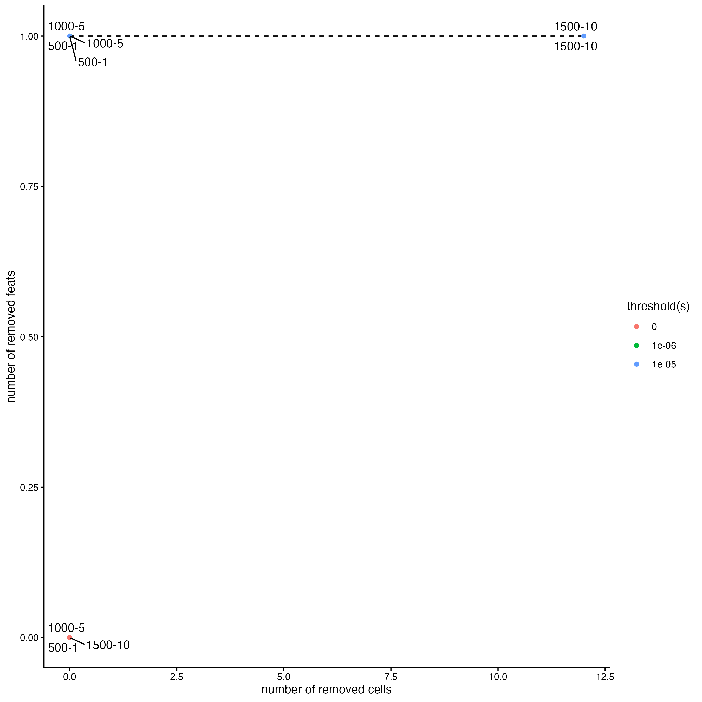
5 Data Processing
Use the previously generated plots to inform filter decisions.
# Filter data
g <- filterGiotto(gobject = g,
feat_det_in_min_cells = 1,
min_det_feats_per_cell = 1)
# Normalize data
g <- normalizeGiotto(gobject = g,
scalefactor = 10000,
verbose = TRUE)
# Add statistics to Giotto Object
g <- addStatistics(gobject = g,
expression_values = "normalized")
# Adjust for covariates
g <- adjustGiottoMatrix(gobject = g,
expression_values = "normalized",
batch_columns = NULL,
covariate_columns = "layer_ID",
name = "custom",
return_gobject = TRUE)Now, take a glance at the data in both 2D and 3D.
# 2D
spatPlot(gobject = g,
point_size = 1.5)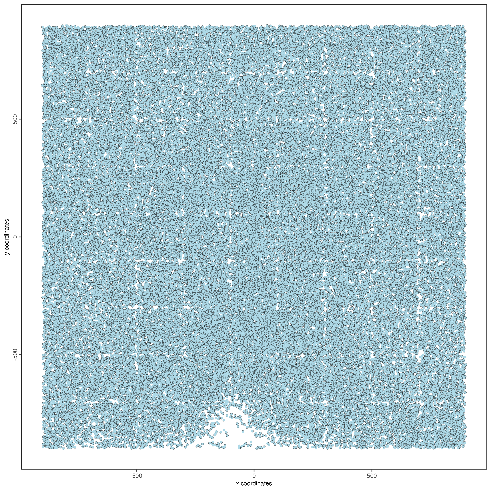
# 3D
spatPlot3D(gobject = g,
point_size = 1.25,
axis_scale = "real")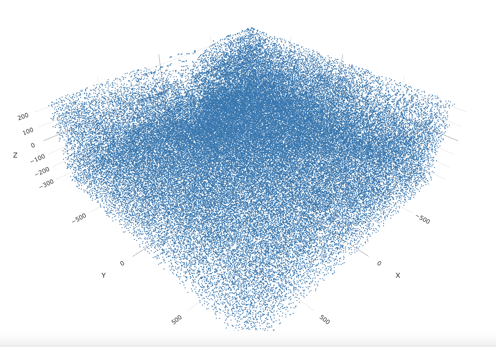
6 Dimension Reduction
There are only 155 genes within this dataset. Use them all (default) within the dimension reduction.
g <- runPCA(gobject = g,
feats_to_use = NULL,
scale_unit = FALSE,
center = TRUE)
# View details about the principal components
screePlot(g)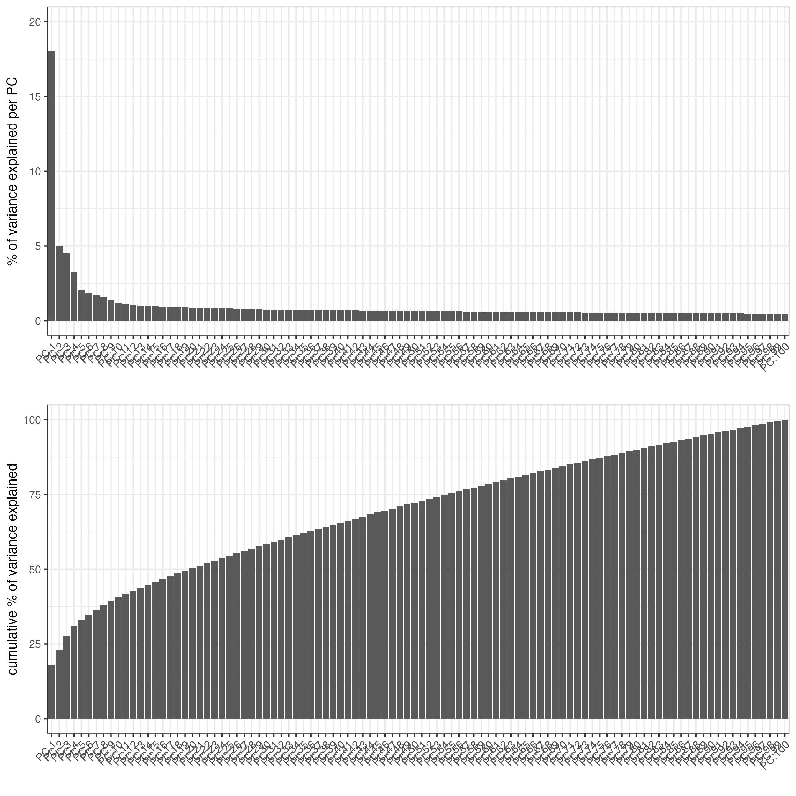
After the PCA, a UMAP may be run. Run the UMAP so clusters may be visualized upon it.
g <- runUMAP(g,
dimensions_to_use = 1:8,
n_components = 3,
n_threads = 4)
plotUMAP_3D(gobject = g,
point_size = 1.5) 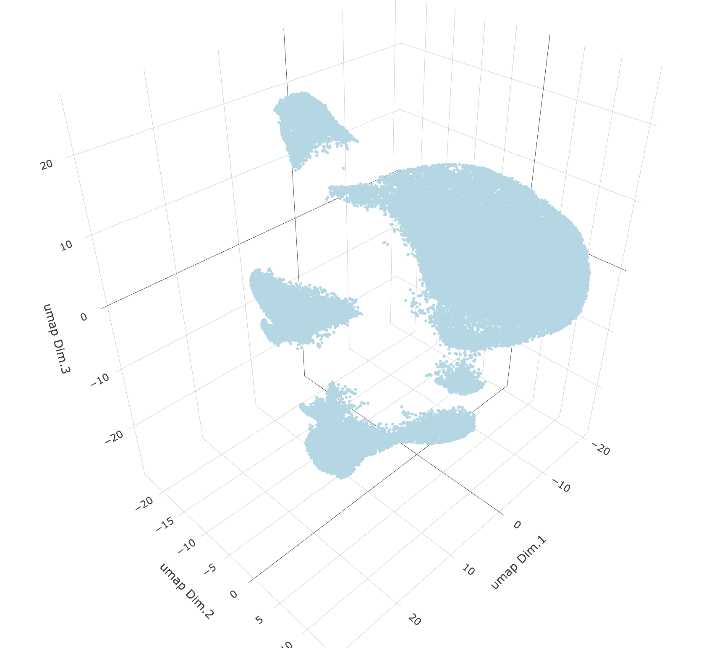
7 Clustering
Create a nearest network, then perform Leiden clustering. The clusters may be visualized on a UMAP.
# Create a sNN network (default)
g <- createNearestNetwork(gobject = g,
dimensions_to_use = 1:8,
k = 15)
# Leiden cluster
g <- doLeidenCluster(gobject = g,
resolution = 0.2,
n_iterations = 200,
name = "leiden_0.2_200")
# Plot the clusters upon the UMAP
plotUMAP_3D(gobject = g,
cell_color = "leiden_0.2_200",
point_size = 1.5,
show_center_label = FALSE)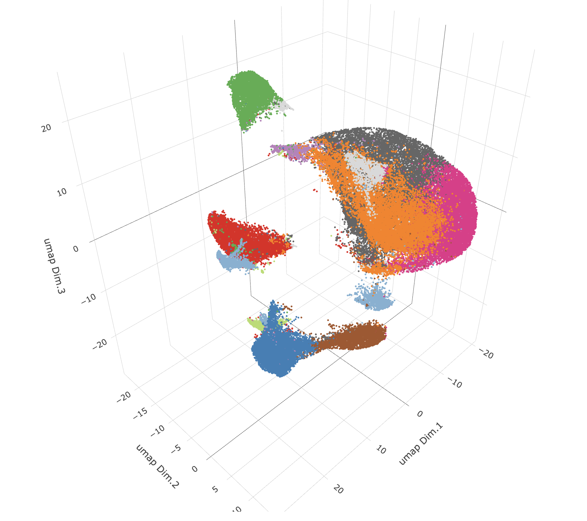
8 Co-Visualize
View the clusters in-tissue on each layer.
spatPlot2D(gobject = g,
point_size = 1.5,
cell_color = "leiden_0.2_200",
group_by = "layer_ID",
cow_n_col = 2,
group_by_subset = c(260, 160, 60, -40, -140, -240))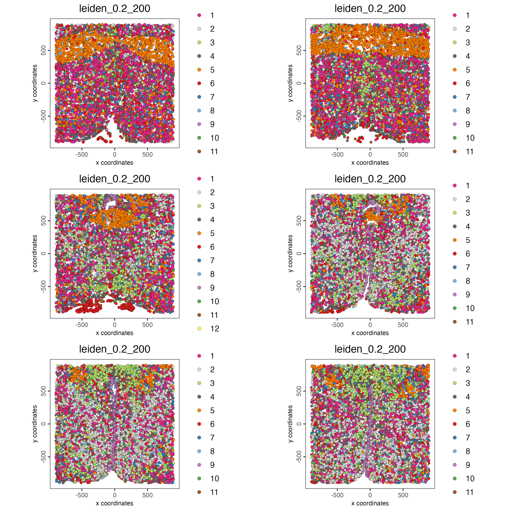
9 Cell Type Marker Gene Detection
Call findMarkers_one_vs_all to identify marker features. Click the function to see alternate methods, or look findGiniMarkers section for details on the gini method. Once marker features have been determined, observe the differential expression across clusters within the violin plot.
markers_gini <- findMarkers_one_vs_all(gobject = g,
method = "gini",
expression_values = "normalized",
cluster_column = "leiden_0.2_200",
min_feats = 1,
rank_score = 2)
topgenes_gini <- unique(markers_gini[, head(.SD, 2), by = "cluster"]$feats)
violinPlot(g,
feats = topgenes_gini,
cluster_column = "leiden_0.2_200",
strip_position = "right")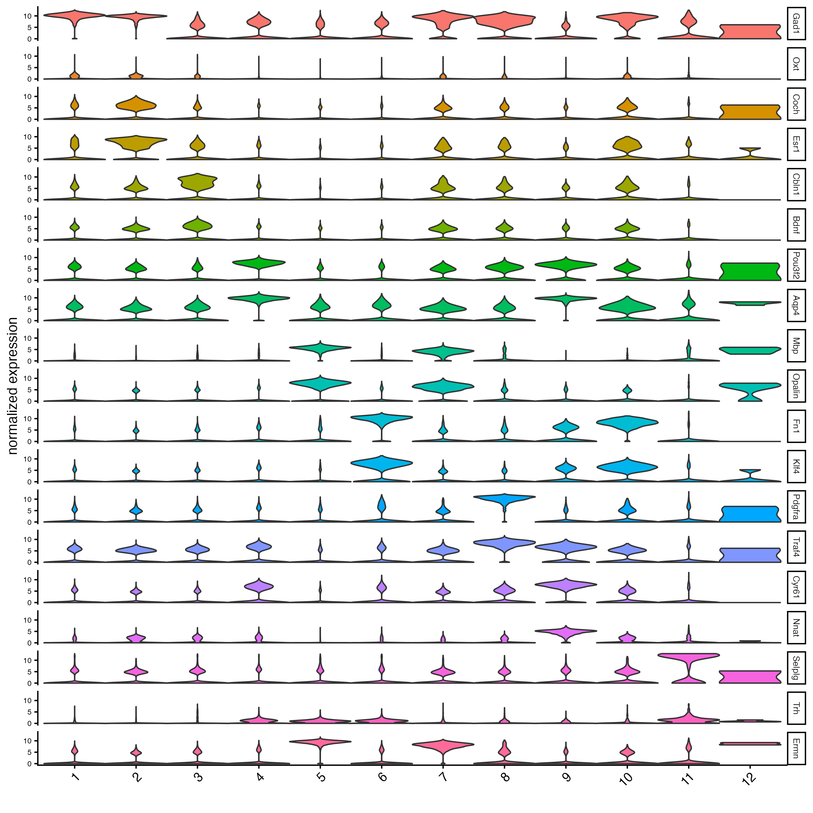
topgenes_gini <- unique(markers_gini[, head(.SD, 6), by = "cluster"]$feats)
plotMetaDataHeatmap(g,
expression_values = "scaled",
metadata_cols = "leiden_0.2_200",
selected_feats = topgenes_gini)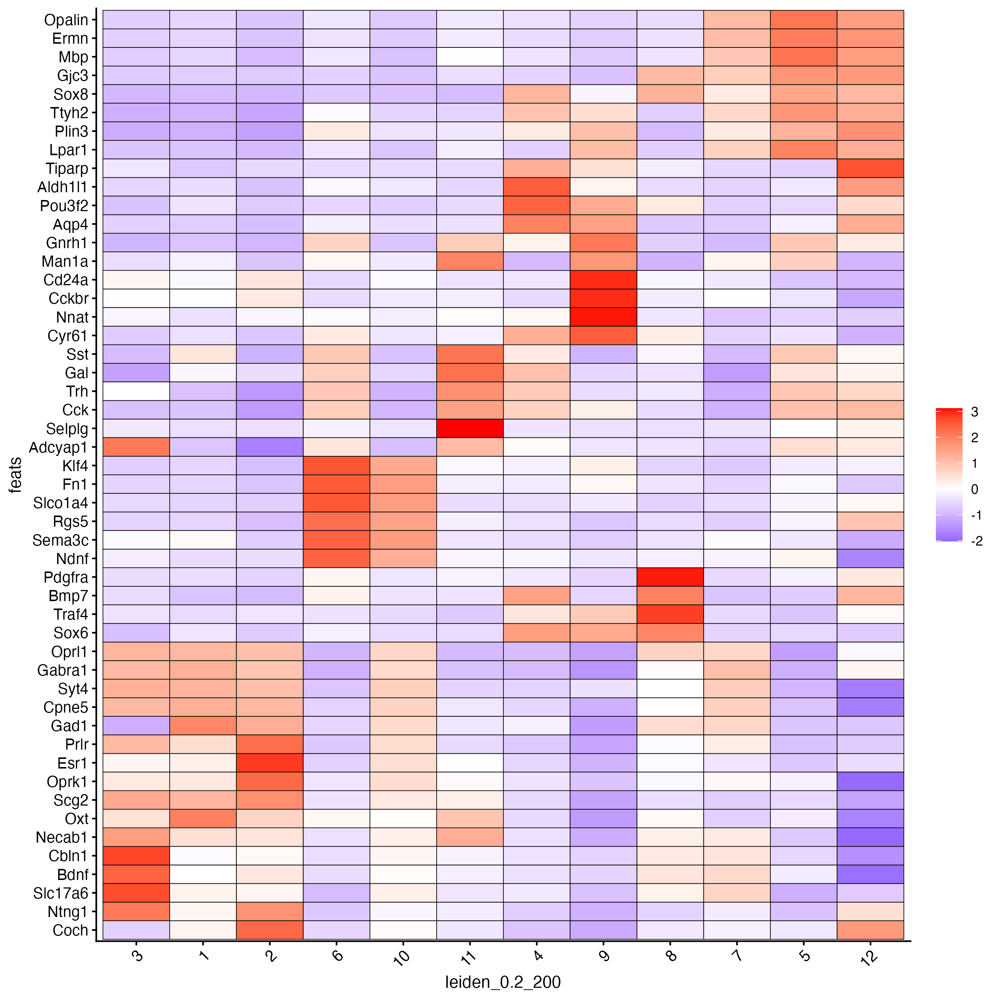
10 Cell Type Annotation
Use known marker and differentially expressed genes (DEGs) to identify cell type for each cluster.
# Known markers and DEGs
selected_genes <- c("Myh11", "Klf4", "Fn1", "Cd24a", "Cyr61", "Nnat", "Trh",
"Selplg", "Pou3f2", "Aqp4", "Traf4", "Pdgfra", "Opalin",
"Mbp", "Ttyh2", "Fezf1", "Cbln1", "Slc17a6", "Scg2", "Isl1", "Gad1")
cell_metadata <- pDataDT(g)
cluster_order <- unique(cell_metadata$leiden_0.2_200)
plotMetaDataHeatmap(g,
expression_values = "scaled",
metadata_cols = "leiden_0.2_200",
selected_feats = selected_genes,
custom_feat_order = rev(selected_genes),
custom_cluster_order = cluster_order)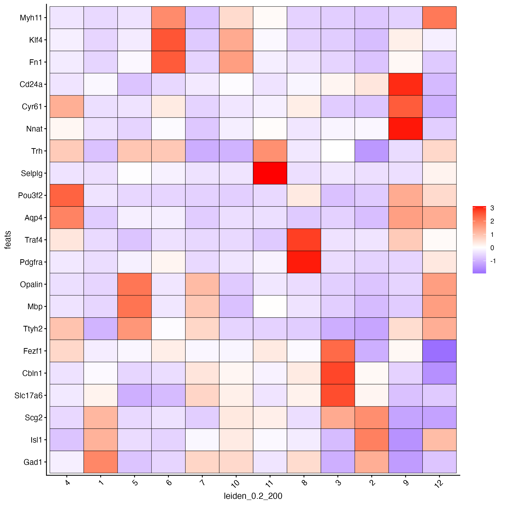
Since there are more Leiden clusters than there are types of cells in this dataset, the same cell type may be assigned to different cluster numbers. This may be done only after verifying that particular clusters highly express marker genes corresponding to the same cell type. The above heatmap is used to streamline this process. Call annotateGiotto to map cell types to Leiden clusters; these will appear in cell_metadata within the giottoObject.
# Name clusters
clusters_cell_types <- c("Inhibitory", "Inhibitory", "Excitatory",
"Astrocyte", "OD Mature", "Endothelial",
"OD Mature", "OD Immature", "Ambiguous",
"Ependymal", "Endothelial", "Microglia",
"OD Mature")
names(clusters_cell_types) <- as.character(sort(cluster_order))
g <- annotateGiotto(gobject = g,
annotation_vector = clusters_cell_types,
cluster_column = "leiden_0.2_200",
name = "cell_types")
## show heatmap
plotMetaDataHeatmap(g,
expression_values = "scaled",
metadata_cols = "cell_types",
selected_feats = selected_genes,
custom_feat_order = rev(selected_genes),
custom_cluster_order = clusters_cell_types)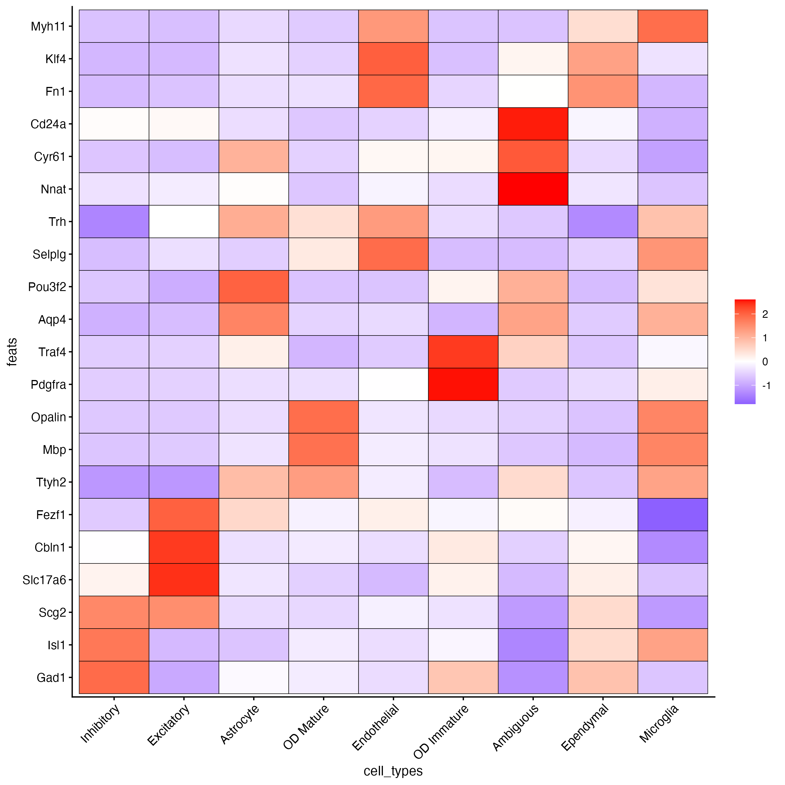
11 Visualize
# Assign colors to each cell type
mycolorcode <- c("red", "lightblue", "yellowgreen","purple", "darkred",
"magenta", "mediumblue", "yellow", "gray")
names(mycolorcode) <- c("Inhibitory", "Excitatory", "OD Mature", "OD Immature",
"Astrocyte", "Microglia", "Ependymal", "Endothelial",
"Ambiguous")
plotUMAP_3D(g,
cell_color = "cell_types",
point_size = 1.5,
cell_color_code = mycolorcode)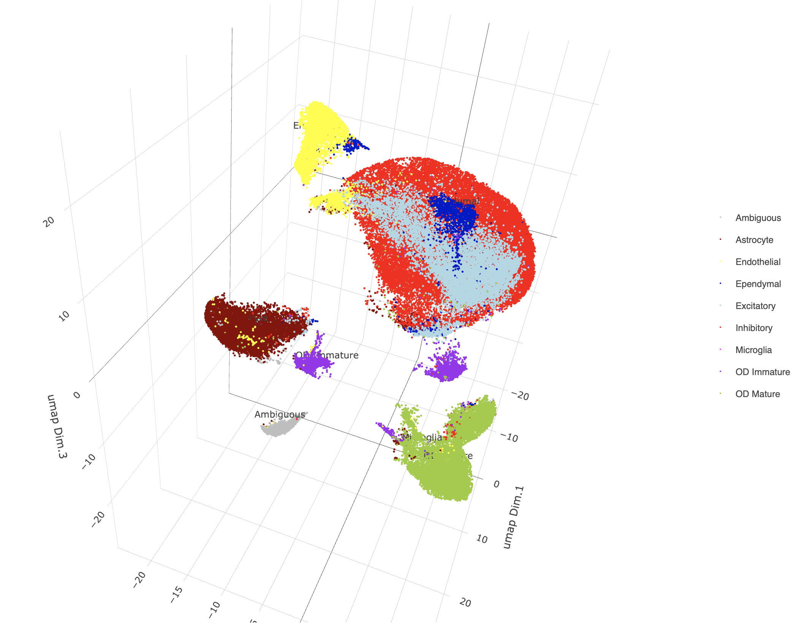
spatPlot3D(g,
cell_color = "cell_types",
axis_scale = "real",
sdimx = "sdimx",
sdimy = "sdimy",
sdimz = "sdimz",
show_grid = FALSE,
cell_color_code = mycolorcode)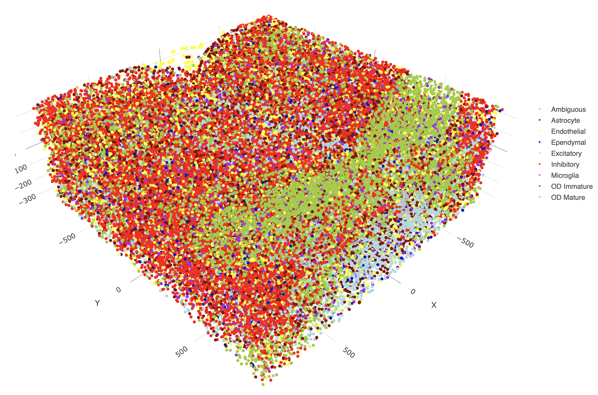
spatPlot2D(gobject = g,
point_size = 1.0,
cell_color = "cell_types",
cell_color_code = mycolorcode,
group_by = "layer_ID",
cow_n_col = 2,
group_by_subset = c(seq(260, -290, -100)))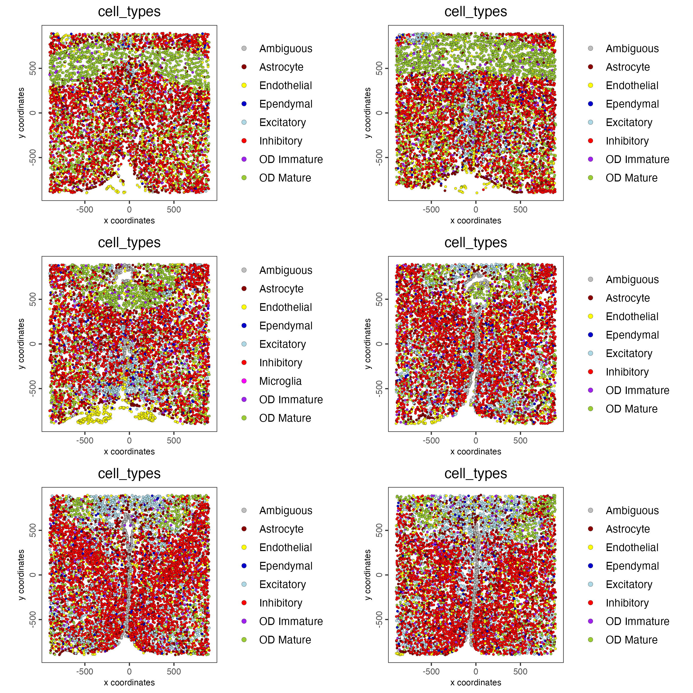
11.1 Excitatory Cells Only
spatPlot3D(g,
cell_color = "cell_types",
axis_scale = "real",
sdimx = "sdimx",
sdimy = "sdimy",
sdimz = "sdimz",
show_grid = FALSE,
cell_color_code = mycolorcode,
select_cell_groups = "Excitatory",
show_other_cells = FALSE)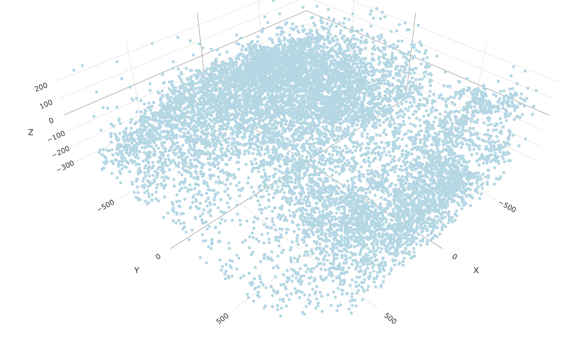
spatPlot2D(gobject = g,
point_size = 1.0,
cell_color = "cell_types",
cell_color_code = mycolorcode,
select_cell_groups = "Excitatory",
show_other_cells = FALSE,
group_by = "layer_ID",
cow_n_col = 2,
group_by_subset = c(seq(260, -290, -100)))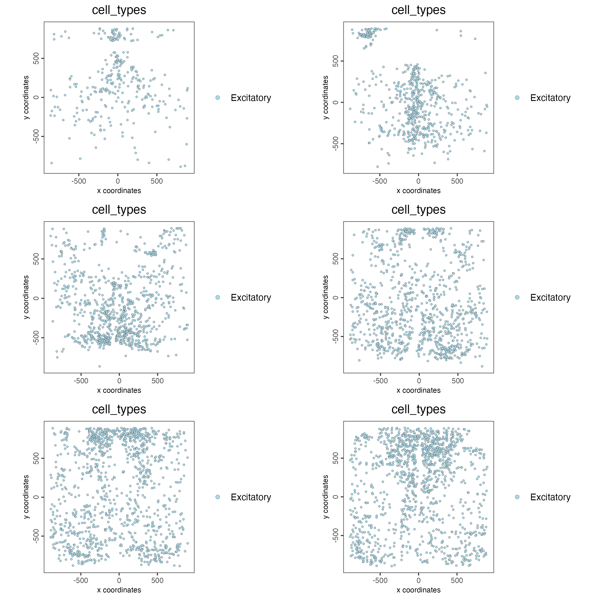
11.2 Inhibitory Cells Only
spatPlot3D(g,
cell_color = "cell_types",
axis_scale = "real",
sdimx = "sdimx",
sdimy = "sdimy",
sdimz = "sdimz",
show_grid = FALSE,
cell_color_code = mycolorcode,
select_cell_groups = "Inhibitory",
show_other_cells = FALSE)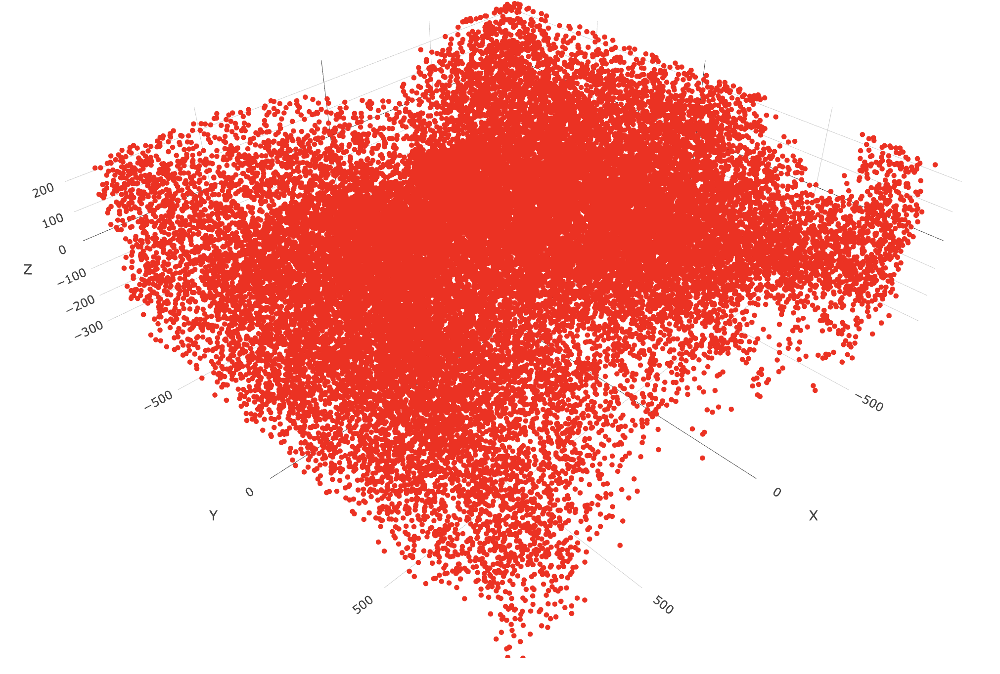
spatPlot2D(gobject = g,
point_size = 1.0,
cell_color = "cell_types",
cell_color_code = mycolorcode,
select_cell_groups = "Inhibitory",
show_other_cells = FALSE,
group_by = "layer_ID",
cow_n_col = 2,
group_by_subset = c(seq(260, -290, -100)))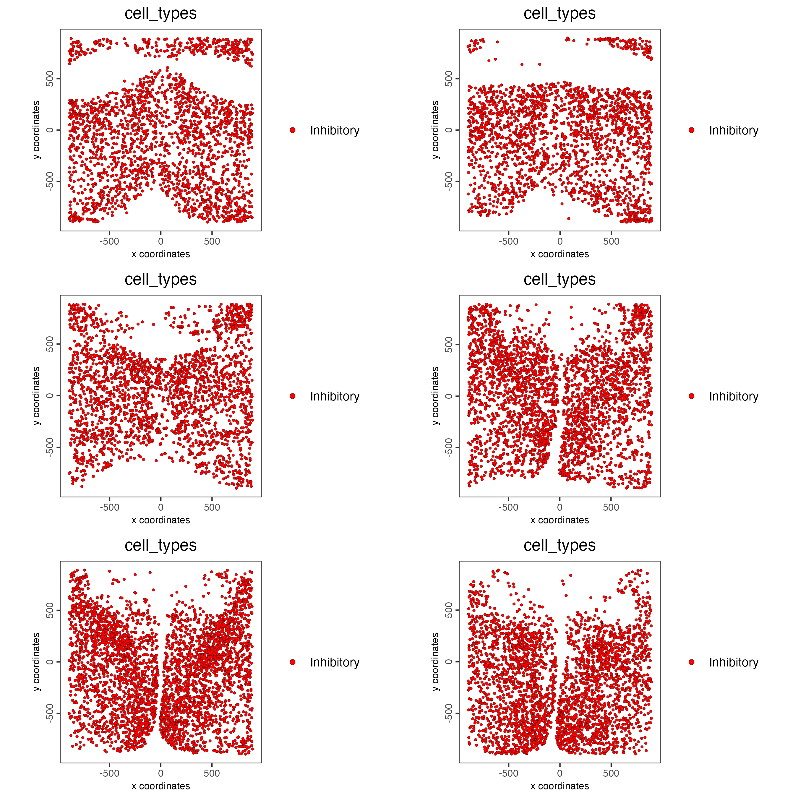
11.3 OD and Astrocytes Only
spatPlot3D(g,
cell_color = "cell_types",
axis_scale = "real",
sdimx = "sdimx",
sdimy = "sdimy",
sdimz = "sdimz",
show_grid = FALSE,
cell_color_code = mycolorcode,
select_cell_groups = c("Astrocyte", "OD Mature", "OD Immature"),
show_other_cells = FALSE)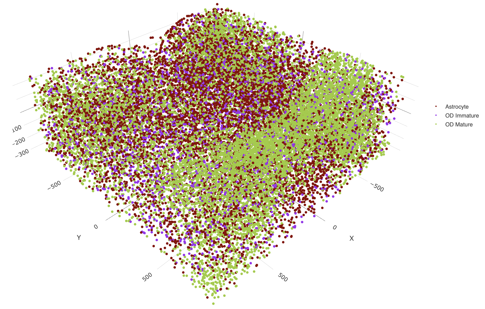
spatPlot2D(gobject = g,
point_size = 1.0,
cell_color = "cell_types",
cell_color_code = mycolorcode,
select_cell_groups = c("Astrocyte", "OD Mature", "OD Immature"),
show_other_cells = FALSE,
group_by = "layer_ID",
cow_n_col = 2,
group_by_subset = c(seq(260, -290, -100)))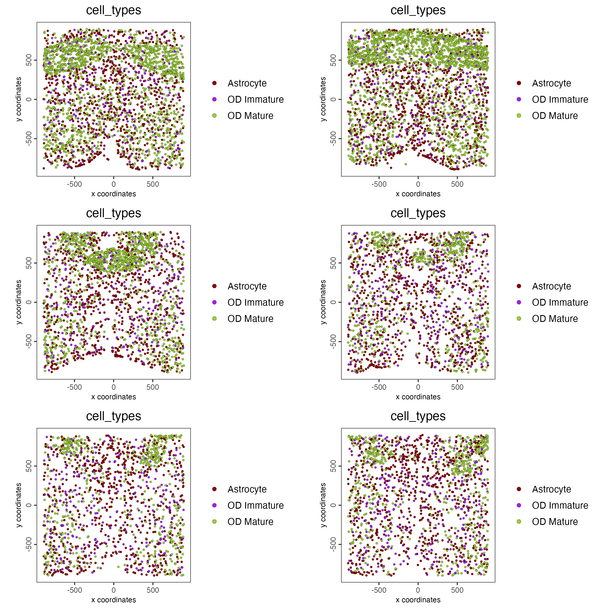
11.4 Other Cells Only
spatPlot3D(g,
cell_color = "cell_types",
axis_scale = "real",
sdimx = "sdimx",
sdimy = "sdimy",
sdimz = "sdimz",
show_grid = FALSE,
cell_color_code = mycolorcode,
select_cell_groups = c("Microglia", "Ependymal", "Endothelial"),
show_other_cells = FALSE)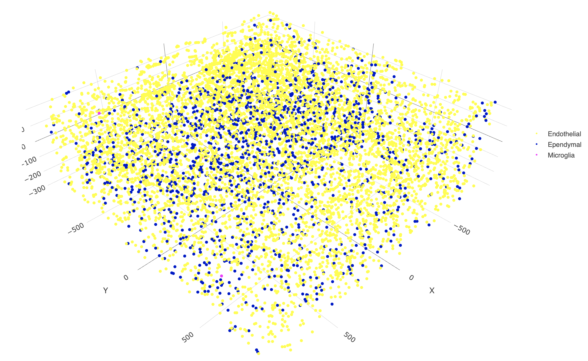
spatPlot2D(gobject = g,
point_size = 1.0,
cell_color = "cell_types",
cell_color_code = mycolorcode,
select_cell_groups = c("Microglia", "Ependymal", "Endothelial"),
show_other_cells = FALSE,
group_by = "layer_ID",
cow_n_col = 2,
group_by_subset = c(seq(260, -290, -100)))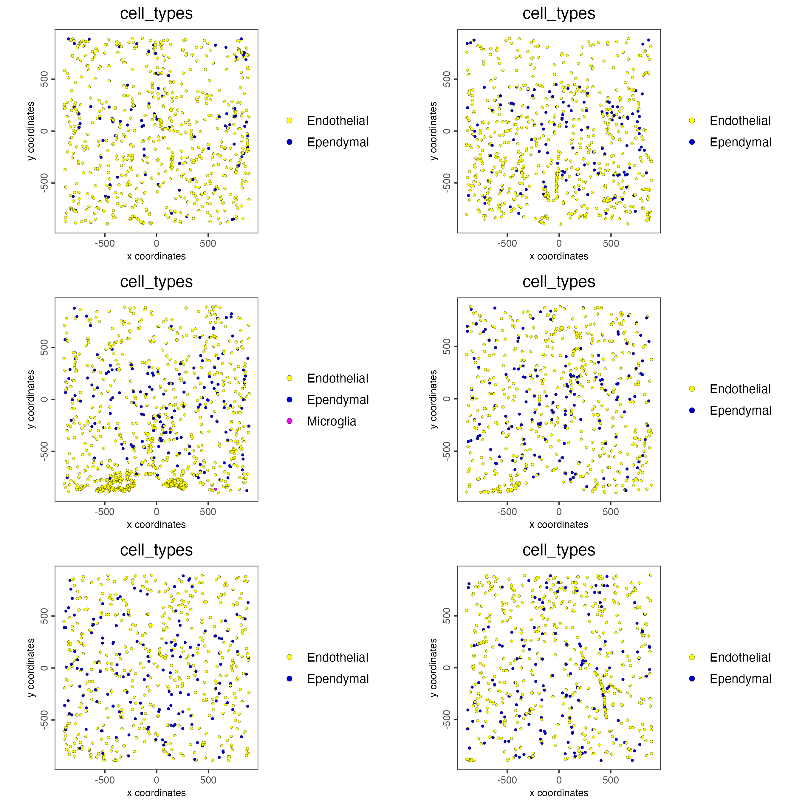
12 Session Info
R version 4.5.1 (2025-06-13)
Platform: x86_64-apple-darwin20
Running under: macOS Tahoe 26.1
Matrix products: default
BLAS: /System/Library/Frameworks/Accelerate.framework/Versions/A/Frameworks/vecLib.framework/Versions/A/libBLAS.dylib
LAPACK: /Library/Frameworks/R.framework/Versions/4.5-x86_64/Resources/lib/libRlapack.dylib; LAPACK version 3.12.1
locale:
[1] en_US.UTF-8/en_US.UTF-8/en_US.UTF-8/C/en_US.UTF-8/en_US.UTF-8
time zone: America/New_York
tzcode source: internal
attached base packages:
[1] stats graphics grDevices utils datasets methods base
other attached packages:
[1] Giotto_4.2.3 GiottoClass_0.4.12
loaded via a namespace (and not attached):
[1] colorRamp2_0.1.0 gridExtra_2.3
[3] rlang_1.1.6 magrittr_2.0.4
[5] RcppAnnoy_0.0.22 GiottoUtils_0.2.5
[7] matrixStats_1.5.0 compiler_4.5.1
[9] png_0.1-8 systemfonts_1.3.1
[11] vctrs_0.6.5 pkgconfig_2.0.3
[13] SpatialExperiment_1.20.0 fastmap_1.2.0
[15] backports_1.5.0 magick_2.9.0
[17] XVector_0.50.0 labeling_0.4.3
[19] ggraph_2.2.2 rmarkdown_2.30
[21] ragg_1.5.0 purrr_1.2.0
[23] xfun_0.54 bluster_1.20.0
[25] beachmat_2.26.0 cachem_1.1.0
[27] jsonlite_2.0.0 DelayedArray_0.36.0
[29] BiocParallel_1.44.0 tweenr_2.0.3
[31] terra_1.8-80 irlba_2.3.5.1
[33] parallel_4.5.1 cluster_2.1.8.1
[35] R6_2.6.1 RColorBrewer_1.1-3
[37] limma_3.66.0 reticulate_1.44.1
[39] GenomicRanges_1.62.0 scattermore_1.2
[41] Rcpp_1.1.0 Seqinfo_1.0.0
[43] SummarizedExperiment_1.40.0 knitr_1.50
[45] R.utils_2.13.0 IRanges_2.44.0
[47] Matrix_1.7-4 igraph_2.2.1
[49] tidyselect_1.2.1 yaml_2.3.10
[51] rstudioapi_0.17.1 abind_1.4-8
[53] viridis_0.6.5 codetools_0.2-20
[55] lattice_0.22-7 tibble_3.3.0
[57] Biobase_2.70.0 withr_3.0.2
[59] S7_0.2.1 evaluate_1.0.5
[61] polyclip_1.10-7 pillar_1.11.1
[63] MatrixGenerics_1.22.0 checkmate_2.3.3
[65] stats4_4.5.1 dbscan_1.2.3
[67] plotly_4.11.0 generics_0.1.4
[69] S4Vectors_0.48.0 ggplot2_4.0.1
[71] scales_1.4.0 gtools_3.9.5
[73] glue_1.8.0 lazyeval_0.2.2
[75] tools_4.5.1 GiottoVisuals_0.2.14
[77] BiocNeighbors_2.4.0 data.table_1.17.8
[79] RSpectra_0.16-2 ScaledMatrix_1.18.0
[81] graphlayouts_1.2.2 tidygraph_1.3.1
[83] cowplot_1.2.0 grid_4.5.1
[85] tidyr_1.3.1 crosstalk_1.2.2
[87] colorspace_2.1-2 SingleCellExperiment_1.32.0
[89] BiocSingular_1.26.1 ggforce_0.5.0
[91] rsvd_1.0.5 cli_3.6.5
[93] textshaping_1.0.4 S4Arrays_1.10.0
[95] viridisLite_0.4.2 dplyr_1.1.4
[97] uwot_0.2.4 gtable_0.3.6
[99] R.methodsS3_1.8.2 digest_0.6.39
[101] progressr_0.18.0 BiocGenerics_0.56.0
[103] SparseArray_1.10.2 ggrepel_0.9.6
[105] rjson_0.2.23 htmlwidgets_1.6.4
[107] farver_2.1.2 memoise_2.0.1
[109] htmltools_0.5.8.1 R.oo_1.27.1
[111] lifecycle_1.0.4 httr_1.4.7
[113] statmod_1.5.1 MASS_7.3-65